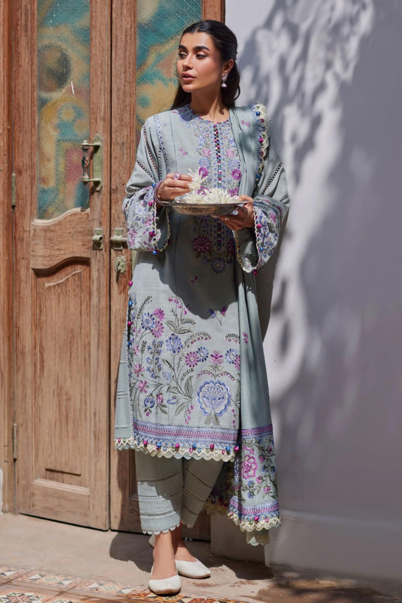
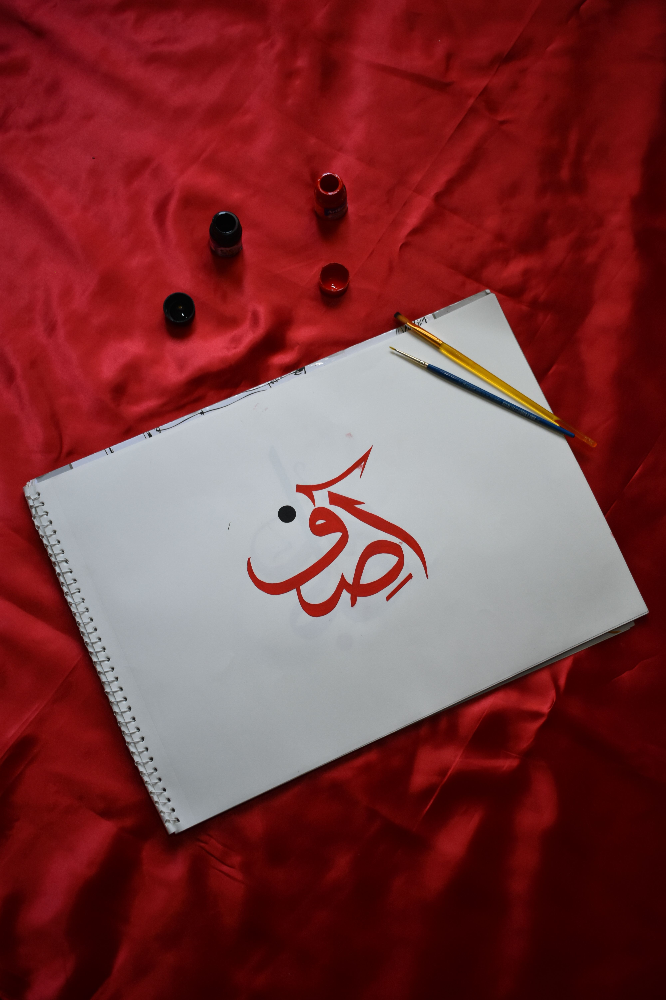
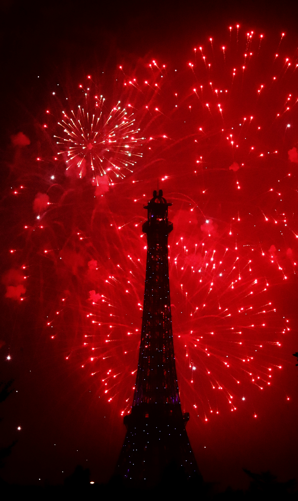

Traditional shalwar kameez – Wikipedia
The shalwar kameez is Pakistan's national dress and is worn by both men and women across all provinces. It is comfortable, modest, and comes in countless styles depending on the region. In Punjab, women often wear bright colors with heavy embroidery, while in Balochistan, dresses are decorated with detailed mirror work and thread patterns.
For formal occasions and weddings, women wear the lehenga or heavily embroidered sharara, often in deep reds, greens, and golds. Men wear the sherwani — a long formal coat — for celebrations and special events. Pakistan's textile industry is one of the largest in the world, known for its fine cotton, silk, and hand-embroidered fabrics. Britannica

Languages spoken across Pakistan – Wikipedia

Urdu script – Pakistan's national language
Pakistan is a multilingual nation with over 70 languages spoken across its regions. Urdu is the national language and serves as the common language between people from different provinces, even though it is the mother tongue of only a small percentage of the population.
Punjabi is the most widely spoken regional language, followed by Sindhi, Pashto, and Balochi. English is used in government, higher education, and business settings. Each language carries its own rich literary tradition, poetry, and folk music. The poet Allama Iqbal wrote in both Urdu and Persian and is considered the national poet of Pakistan. Learn more about Pakistani languages

Celebrations across Pakistan – Wikipedia
Festivals in Pakistan are vibrant, colorful, and deeply rooted in both religion and tradition. Eid ul-Fitr and Eid ul-Adha are the two most celebrated Islamic holidays. During Eid, families gather, exchange gifts, wear new clothes, and share special meals. Streets are decorated and mosques are filled with worshippers.
Basant is a kite festival traditionally celebrated in Lahore every spring. The sky fills with hundreds of colorful kites, and rooftops become gathering spots for families and friends. Independence Day on August 14th is celebrated nationwide with flag-raising ceremonies, parades, and fireworks marking Pakistan's independence in 1947. About Basant Festival
Other notable celebrations include Nowruz (Persian New Year) celebrated in parts of Balochistan and Gilgit-Baltistan, and Shab-e-Barat, a night of prayer and reflection observed across the country.
Watch this cinematic video capturing the beauty and energy of Basant in Lahore. The festival is one of Pakistan's most visually stunning cultural events. – Watch on YouTube